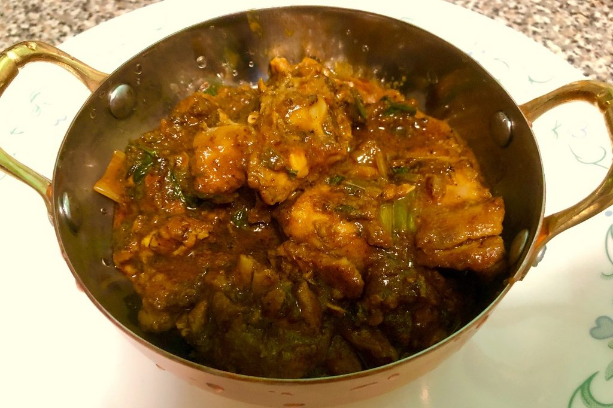

Chicken Curry Recipe
Nepali Style

A staple Nepali dish served with rice and lentils, sometimes with achar. The recipe and the way to cook differs from household to household. The same recipe could be used for other proteins such as goat and pork.
Ingredients:
- Chicken Meat(Thigh Preferred)
- Garam Masala
- Coriander Powder
- Cumin Powder
- Salt
- Rec chilli powder
- Onions
- Green Chilli
- Tomtato
- GG Paste(Ginger/Garlic)
- Coriander Leaves
Steps Required:
- Get a big pan and heat up some cooking oil.
- When the oil gets hot, fry up the chicken(pieced up)
- Occasionally stir it, making sure that its fried on all sides
- When the chicken gets golden brown, put in onions
- After the onions start getting golden brown, put in gg paste
- Stir it for a few minutes, and then put in salt per taste, red chilli powder
- Stir and then add coriander powder, garam masala and cumin powder
- Let the spices fry for a bit and then add sliced green chilli
- Stir and then add diced tomatos
- Sti occasionally till the tomatoes turn to gravy and at the end put in chopped coriander leaves.
Enjoy or try to as the recipe is a disaster.